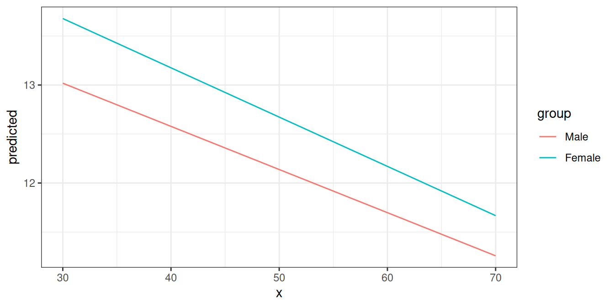
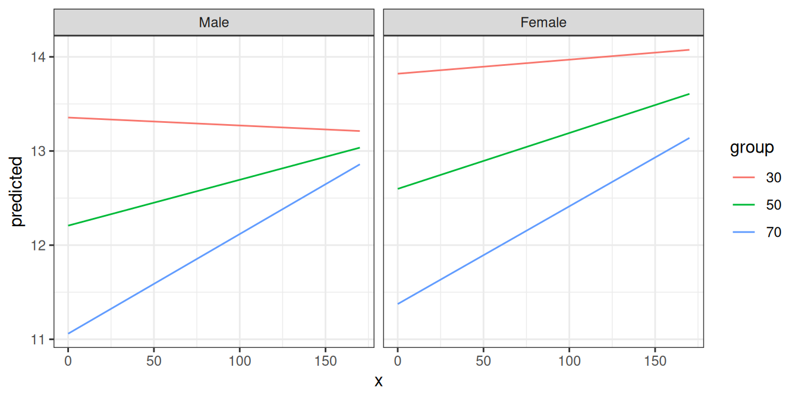

ggeffects: Marginal Means and Adjusted Predictions of Regression Models
Daniel Lüdecke
2024-04-19
Source:vignettes/ggeffects.Rmd
ggeffects.RmdAims of the ggeffects-package
Results of regression models are typically presented as tables that are easy to understand. For more complex models that include interaction or transformed terms (e.g., splines or quadratic terms, log-transformed outcomes, …), tables with regression coefficients are much more difficult to interpret. In such cases, the visualization of marginal means or adjusted predictions is far easier to understand and allows to intuitively get the idea of how predictors and outcome are associated, even for complex models.
There are three major goals that you can achieve with
ggeffects: computing marginal means and adjusted predictions,
testing these predictions for statistical significance, and creating
figures (plots). What you basically would need for your workflow is:
predict_response(), test_predictions() and
plot().
What ggeffects does
ggeffects computes marginal means and adjusted predictions at the mean (MEM), at representative values (MER) or averaged across predictors (so called focal terms) from statistical models. The result is returned as data frame with consistent structure, especially for further use with ggplot.
At least one focal term needs to be specified for which the effects are computed. It is also possible to compute adjusted predictions for focal terms, grouped by the levels of another model’s predictor. The package also allows plotting adjusted predictions for two-, three- or four-way-interactions, or for specific values of a focal term only. Examples are shown below.
How to use the ggeffects-package: The main function
predict_response() is actually a wrapper around three
“workhorse” functions, ggpredict(),
ggemmeans() and ggaverage(). Depending on the
value of the margin argument,
predict_response() calls one of those functions, with
different arguments. The margin argument indicates how to
marginalize over the non-focal predictors, i.e. those variables
that are not specified in terms.
It is important to know, which question you would like to answer. See
the following options for the margin argument and which
question is answered by each option:
-
"mean_reference"and"mean_mode":"mean_reference"callsggpredict(), i.e. non-focal predictors are set to their mean (numeric variables), reference level (factors), or “most common” value (mode) in case of character vectors."mean_mode"callsggpredict(typical = c(numeric = "mean", factor = "mode")), i.e. non-focal predictors are set to their mean (numeric variables) or mode (factors, or “most common” value in case of character vectors).Predictions based on
"mean_reference"and"mean_mode"represent a rather “theoretical” view on your data, which does not necessarily exactly reflect the characteristics of your sample. It helps answer the question, “What is the predicted value of the response at meaningful values or levels of my focal terms for a ‘typical’ observation in my data?”, where ‘typical’ refers to certain characteristics of the remaining predictors. -
"marginalmeans": callsggemmeans(), i.e. non-focal predictors are set to their mean (numeric variables) or marginalized over the levels or “values” for factors and character vectors. Marginalizing over the factor levels of non-focal terms computes a kind of “weighted average” for the values at which these terms are hold constant. Thus, non-focal categorical terms are conditioned on “weighted averages” of their levels."marginalmeans"comes closer to the sample, because it takes all possible values and levels of your non-focal predictors into account. It would answer thr question, “What is the predicted value of the response at meaningful values or levels of my focal terms for an ‘average’ observation in my data?”. It refers to randomly picking a subject of your sample and the result you get on average. -
"empirical"(or"counterfactual"): callsggaverage(), i.e. non-focal predictors are marginalized over the observations in your sample. The response is predicted for each subject in the data and predicted values are then averaged across all subjects, aggregated/grouped by the focal terms. In particular, averaging is applied to counterfactual predictions (Dickerman and Hernan 2020). There is a more detailed description in this vignette."empirical"is probably the most “realistic” approach, insofar as the results can also be transferred to other contexts. It answers the question, “What is the predicted value of the response at meaningful values or levels of my focal terms for the ‘average’ observation in the population?”. It does not only refer to the actual data in your sample, but also “what would be if” we had more data, or if we had data from a different population. This is where “counterfactual” refers to.
You can set a default-option for the margin argument via
options(),
e.g. options(ggeffects_margin = "empirical"), so you don’t
have to specify your “default” marginalization method each time you call
predict_response(). Use
options(ggeffects_margin = NULL) to remove that
setting.
The condition argument can be used to fix non-focal
terms to specific values.
Short technical note
Predicting the outcome
By default, predict_response() always returns predicted
values for the response of a model (or response
distribution for Bayesian models).
Confidence intervals
Typically, predict_response() (or
ggpredict()) returns confidence intervals based on the
standard errors as returned by the predict()-function,
assuming normal distribution (+/- 1.96 * SE) resp. a
Student’s t-distribuion (if degrees of freedom are available). If
predict() for a certain model object does not
return standard errors (for example, merMod-objects), these are
calculated manually, by following steps: matrix-multiply X
by the parameter vector B to get the predictions, then
extract the variance-covariance matrix V of the parameters
and compute XVX' to get the variance-covariance matrix of
the predictions. The square-root of the diagonal of this matrix
represent the standard errors of the predictions, which are then
multiplied by the critical test-statistic value (e.g., ~1.96 for normal
distribuion) for the confidence intervals.
Consistent data frame structure
The returned data frames always have the same, consistent structure
and column names, so it’s easy to create ggplot-plots without the need
to re-write the arguments to be mapped in each ggplot-call.
x and predicted are the values for the x- and
y-axis. conf.low and conf.high could be used
as ymin and ymax aesthetics for ribbons to add
confidence bands to the plot. group can be used as
grouping-aesthetics, or for faceting.
If the original variable names are desired as column names, there is
an as.data.frame() method for objects of class
ggeffects, which has an terms_to_colnames
argument, to use the variable names as column names instead of the
standardized names "x" etc.
The examples shown here mostly use ggplot2-code for
the plots, however, there is also a plot()-method, which is
described in the vignette Plotting Adjusted
Predictions.
Adjusted predictions at the mean
predict_response() computes predicted values for all
possible levels and values from model’s predictors that are defined as
focal terms. In the simplest case, a fitted model is passed as
first argument, and the focal term as second argument. Use the raw name
of the variable for the terms-argument only - you don’t
need to write things like poly(term, 3) or
I(term^2) for the terms-argument.
library(ggeffects)
data(efc, package = "ggeffects")
fit <- lm(barthtot ~ c12hour + neg_c_7 + c161sex + c172code, data = efc)
predict_response(fit, terms = "c12hour")
#> # Predicted values of Total score BARTHEL INDEX
#>
#> c12hour | Predicted | 95% CI
#> ----------------------------------
#> 0 | 75.44 | 73.25, 77.63
#> 20 | 70.38 | 68.56, 72.19
#> 45 | 64.05 | 62.39, 65.70
#> 65 | 58.98 | 57.15, 60.80
#> 85 | 53.91 | 51.71, 56.12
#> 105 | 48.85 | 46.14, 51.55
#> 125 | 43.78 | 40.51, 47.05
#> 170 | 32.38 | 27.73, 37.04
#>
#> Adjusted for:
#> * neg_c_7 = 11.84
#> * c161sex = 1.76
#> * c172code = 1.97As you can see, predict_response() (or their lower-level
functions ggpredict(), ggeffect(),
ggaverage() or ggemmeans()) has a nice
print() method, which takes care of printing not too many
rows (but always an equally spaced range of values, including minimum
and maximum value of the term in question) and giving some extra
information. This is especially useful when predicted values are shown
depending on the levels of other terms (see below).
The output shows the predicted values for the response at each value from the term c12hour. The data is already in shape for ggplot:
library(ggplot2)
theme_set(theme_bw())
mydf <- predict_response(fit, terms = "c12hour")
ggplot(mydf, aes(x, predicted)) + geom_line()
Adjusted predictions at the mean by other predictors’ levels
The terms argument accepts up to four model terms, where
the second to fourth terms indicate grouping levels. This allows
predictions for the term in question at different levels or values for
other focal terms:
predict_response(fit, terms = c("c12hour", "c172code"))
#> # Predicted values of Total score BARTHEL INDEX
#>
#> c172code: low level of education
#>
#> c12hour | Predicted | 95% CI
#> ----------------------------------
#> 0 | 74.75 | 71.26, 78.23
#> 30 | 67.15 | 64.03, 70.26
#> 55 | 60.81 | 57.77, 63.86
#> 85 | 53.22 | 49.95, 56.48
#> 115 | 45.62 | 41.86, 49.37
#> 170 | 31.69 | 26.59, 36.78
#>
#> c172code: intermediate level of education
#>
#> c12hour | Predicted | 95% CI
#> ----------------------------------
#> 0 | 75.46 | 73.28, 77.65
#> 30 | 67.87 | 66.16, 69.57
#> 55 | 61.53 | 59.82, 63.25
#> 85 | 53.93 | 51.72, 56.14
#> 115 | 46.34 | 43.35, 49.32
#> 170 | 32.40 | 27.74, 37.07
#>
#> c172code: high level of education
#>
#> c12hour | Predicted | 95% CI
#> ----------------------------------
#> 0 | 76.18 | 72.81, 79.55
#> 30 | 68.58 | 65.41, 71.76
#> 55 | 62.25 | 59.00, 65.50
#> 85 | 54.65 | 51.03, 58.27
#> 115 | 47.05 | 42.85, 51.26
#> 170 | 33.12 | 27.50, 38.74
#>
#> Adjusted for:
#> * neg_c_7 = 11.84
#> * c161sex = 1.76Creating a ggplot is pretty straightforward: the colour
aesthetics is mapped with the group column:
mydf <- predict_response(fit, terms = c("c12hour", "c172code"))
ggplot(mydf, aes(x, predicted, colour = group)) + geom_line()
Another focal term would stratify the result and will create another
column named facet, which - as the name implies - might be
used to create a facted plot:
mydf <- predict_response(fit, terms = c("c12hour", "c172code", "c161sex"))
# print a more compact table
print(mydf, collapse_tables = TRUE)
#> # Predicted values of Total score BARTHEL INDEX
#>
#> c12hour | c172code | c161sex | Predicted | 95% CI
#> ---------------------------------------------------------------------------------
#> 0 | low level of education | [1] Male | 73.95 | 69.35, 78.56
#> 45 | | | 62.56 | 58.22, 66.89
#> 85 | | | 52.42 | 47.89, 56.96
#> 170 | | | 30.89 | 24.84, 36.95
#> 0 | | [2] Female | 75.00 | 71.40, 78.59
#> 45 | | | 63.60 | 60.45, 66.74
#> 85 | | | 53.46 | 50.12, 56.80
#> 170 | | | 31.93 | 26.82, 37.05
#> 0 | intermediate level of education | [1] Male | 74.67 | 71.05, 78.29
#> 45 | | | 63.27 | 59.88, 66.67
#> 85 | | | 53.14 | 49.39, 56.89
#> 170 | | | 31.61 | 25.97, 37.25
#> 0 | | [2] Female | 75.71 | 73.31, 78.12
#> 45 | | | 64.32 | 62.41, 66.22
#> 85 | | | 54.18 | 51.81, 56.56
#> 170 | | | 32.65 | 27.94, 37.37
#> 0 | high level of education | [1] Male | 75.39 | 71.03, 79.75
#> 45 | | | 63.99 | 59.72, 68.26
#> 85 | | | 53.86 | 49.22, 58.50
#> 170 | | | 32.33 | 25.94, 38.72
#> 0 | | [2] Female | 76.43 | 72.88, 79.98
#> 45 | | | 65.03 | 61.67, 68.39
#> 85 | | | 54.90 | 51.15, 58.65
#> 170 | | | 33.37 | 27.69, 39.05
#>
#> Adjusted for:
#> * neg_c_7 = 11.84
ggplot(mydf, aes(x, predicted, colour = group)) +
geom_line() +
facet_wrap(~facet)
Finally, a third differentation can be defined, creating another
column named panel. In such cases, you may create multiple
plots (for each value in panel). ggeffects
takes care of this when you use plot() and automatically
creates an integrated plot with all panels in one figure.
mydf <- predict_response(fit, terms = c("c12hour", "c172code", "c161sex", "neg_c_7"))
plot(mydf) + theme(legend.position = "bottom")Adjusted predictions for each model term
If the term argument is either missing or
NULL, adjusted predictions for each model term are
calculated. The result is returned as a list, which can be plotted
manually (or using the plot() function).
mydf <- predict_response(fit)
mydf
#> $c12hour
#> # Predicted values of Total score BARTHEL INDEX
#>
#> c12hour | Predicted | 95% CI
#> ----------------------------------
#> 0 | 75.44 | 73.25, 77.63
#> 20 | 70.38 | 68.56, 72.19
#> 45 | 64.05 | 62.39, 65.70
#> 65 | 58.98 | 57.15, 60.80
#> 85 | 53.91 | 51.71, 56.12
#> 105 | 48.85 | 46.14, 51.55
#> 125 | 43.78 | 40.51, 47.05
#> 170 | 32.38 | 27.73, 37.04
#>
#> Adjusted for:
#> * neg_c_7 = 11.84
#> * c161sex = 1.76
#> * c172code = 1.97
#>
#> $neg_c_7
#> # Predicted values of Total score BARTHEL INDEX
#>
#> neg_c_7 | Predicted | 95% CI
#> ----------------------------------
#> 6 | 78.17 | 75.10, 81.23
#> 8 | 73.57 | 71.20, 75.94
#> 12 | 64.38 | 62.73, 66.04
#> 14 | 59.79 | 57.88, 61.70
#> 16 | 55.19 | 52.72, 57.67
#> 20 | 46.00 | 42.04, 49.97
#> 22 | 41.41 | 36.63, 46.20
#> 28 | 27.63 | 20.30, 34.96
#>
#> Adjusted for:
#> * c12hour = 42.20
#> * c161sex = 1.76
#> * c172code = 1.97
#>
#> $c161sex
#> # Predicted values of Total score BARTHEL INDEX
#>
#> c161sex | Predicted | 95% CI
#> ----------------------------------
#> 1 | 63.96 | 60.57, 67.35
#> 2 | 65.00 | 63.11, 66.90
#>
#> Adjusted for:
#> * c12hour = 42.20
#> * neg_c_7 = 11.84
#> * c172code = 1.97
#>
#> $c172code
#> # Predicted values of Total score BARTHEL INDEX
#>
#> c172code | Predicted | 95% CI
#> -----------------------------------
#> 1 | 64.06 | 61.01, 67.11
#> 2 | 64.78 | 63.12, 66.43
#> 3 | 65.49 | 62.31, 68.68
#>
#> Adjusted for:
#> * c12hour = 42.20
#> * neg_c_7 = 11.84
#> * c161sex = 1.76
#>
#> attr(,"class")
#> [1] "ggalleffects" "list"
#> attr(,"model.name")
#> [1] "fit"Two-Way, Three-Way- and Four-Way-Interactions
To plot the adjusted predictions of interaction terms, simply specify
these terms in the terms argument.
data(efc, package = "ggeffects")
# make categorical
efc$c161sex <- datawizard::to_factor(efc$c161sex)
# fit model with interaction
fit <- lm(neg_c_7 ~ c12hour + barthtot * c161sex, data = efc)
# select only levels 30, 50 and 70 from continuous variable Barthel-Index
mydf <- predict_response(fit, terms = c("barthtot [30,50,70]", "c161sex"))
ggplot(mydf, aes(x, predicted, colour = group)) + geom_line()Since the terms argument accepts up to four focal terms,
you can also compute adjusted predictions for a 3-way-interaction or
4-way-interaction. To plot the adjusted predictions of three interaction
terms, just like before, specify all three terms in the
terms argument.
# fit model with 3-way-interaction
fit <- lm(neg_c_7 ~ c12hour * barthtot * c161sex, data = efc)
# select only levels 30, 50 and 70 from continuous variable Barthel-Index
mydf <- predict_response(fit, terms = c("c12hour", "barthtot [30,50,70]", "c161sex"))
ggplot(mydf, aes(x, predicted, colour = group)) +
geom_line() +
facet_wrap(~facet)
4-way-interactions are rather confusing to print and plot. When
plotting, multiple plots (for each level of the fourth interaction term)
are plotted for the remaining three interaction terms. This can easily
be done using the plot()-method.
# fit model with 4-way-interaction
fit <- lm(neg_c_7 ~ c12hour * barthtot * c161sex * c172code, data = efc)
# adjusted predictions for all 4 interaction terms
pr <- predict_response(fit, c("c12hour", "barthtot", "c161sex", "c172code"))
# use plot() method, easier than own ggplot-code from scratch
plot(pr) + theme(legend.position = "bottom")
Polynomial terms and splines
predict_response() also works for models with polynomial
terms or splines. Following code reproduces the plot from
?splines::bs:
library(splines)
data(women)
fm1 <- lm(weight ~ bs(height, df = 5), data = women)
dat <- predict_response(fm1, "height")
ggplot(dat, aes(x, predicted)) +
geom_line() +
geom_point()
Survival models
predict_response() also supports
coxph-models from the survival-package and
is able to either plot risk-scores (the default), probabilities of
survival (type = "survival") or cumulative hazards
(type = "cumulative_hazard").
Since probabilities of survival and cumulative hazards are changing
across time, the time-variable is automatically used as x-axis in such
cases, so the terms argument only needs up to
two variables for type = "survival" or
type = "cumulative_hazard".
library(survival)
data("lung2")
m <- coxph(Surv(time, status) ~ sex + age + ph.ecog, data = lung2)
# predicted risk-scores
predict_response(m, c("sex", "ph.ecog"))
#> # Predicted risk scores
#>
#> ph.ecog: good
#>
#> sex | Predicted | 95% CI
#> -------------------------------
#> male | 1.00 | 1.00, 1.00
#> female | 0.58 | 0.42, 0.81
#>
#> ph.ecog: ok
#>
#> sex | Predicted | 95% CI
#> -------------------------------
#> male | 1.51 | 1.02, 2.23
#> female | 0.87 | 0.53, 1.43
#>
#> ph.ecog: limited
#>
#> sex | Predicted | 95% CI
#> -------------------------------
#> male | 2.47 | 1.58, 3.86
#> female | 1.43 | 0.83, 2.45
#>
#> Adjusted for:
#> * age = 62.42
# probability of survival
predict_response(m, c("sex", "ph.ecog"), type = "survival")
#> # Probability of Survival
#>
#> sex: male
#> ph.ecog: good
#>
#> time | Predicted | 95% CI
#> -----------------------------
#> 1 | 1.00 | 1.00, 1.00
#> 180 | 0.78 | 0.69, 0.87
#> 276 | 0.65 | 0.54, 0.78
#> 1022 | 0.09 | 0.03, 0.26
#>
#> sex: male
#> ph.ecog: ok
#>
#> time | Predicted | 95% CI
#> -----------------------------
#> 1 | 1.00 | 1.00, 1.00
#> 180 | 0.69 | 0.60, 0.79
#> 276 | 0.52 | 0.42, 0.64
#> 1022 | 0.02 | 0.01, 0.11
#>
#> sex: male
#> ph.ecog: limited
#>
#> time | Predicted | 95% CI
#> -----------------------------
#> 1 | 1.00 | 1.00, 1.00
#> 180 | 0.54 | 0.42, 0.70
#> 276 | 0.34 | 0.22, 0.52
#> 1022 | 0.00 | 0.00, 0.04
#>
#> sex: female
#> ph.ecog: good
#>
#> time | Predicted | 95% CI
#> -----------------------------
#> 1 | 1.00 | 1.00, 1.00
#> 180 | 0.87 | 0.80, 0.93
#> 276 | 0.78 | 0.68, 0.88
#> 1022 | 0.24 | 0.11, 0.51
#>
#> sex: female
#> ph.ecog: ok
#>
#> time | Predicted | 95% CI
#> -----------------------------
#> 1 | 1.00 | 1.00, 1.00
#> 180 | 0.80 | 0.73, 0.88
#> 276 | 0.68 | 0.59, 0.79
#> 1022 | 0.12 | 0.04, 0.31
#>
#> sex: female
#> ph.ecog: limited
#>
#> time | Predicted | 95% CI
#> -----------------------------
#> 1 | 1.00 | 1.00, 1.00
#> 180 | 0.70 | 0.59, 0.83
#> 276 | 0.53 | 0.40, 0.71
#> 1022 | 0.03 | 0.00, 0.19
#>
#> Adjusted for:
#> * age = 62.42Labelling the data
ggeffects makes use of the sjlabelled-package
and supports labelled
data. If the data from the fitted models is labelled, the value and
variable label attributes are usually copied to the model frame stored
in the model object. ggeffects provides various
getter-functions to access these labels, which are returned as
character vector and can be used in ggplot’s lab()- or
scale_*()-functions.
-
get_title()- a generic title for the plot, based on the model family, like “predicted values” or “predicted probabilities” -
get_x_title()- the variable label of the first model term interms. -
get_y_title()- the variable label of the response. -
get_legend_title()- the variable label of the second model term interms. -
get_x_labels()- value labels of the first model term interms. -
get_legend_labels()- value labels of the second model term interms.
The data frame returned by predict_response() must be
used as argument to one of the above function calls.
get_x_title(mydf)
#> [1] "average number of hours of care per week"
get_y_title(mydf)
#> [1] "Negative impact with 7 items"
ggplot(mydf, aes(x, predicted, colour = group)) +
geom_line() +
facet_wrap(~facet) +
labs(
x = get_x_title(mydf),
y = get_y_title(mydf),
colour = get_legend_title(mydf)
)